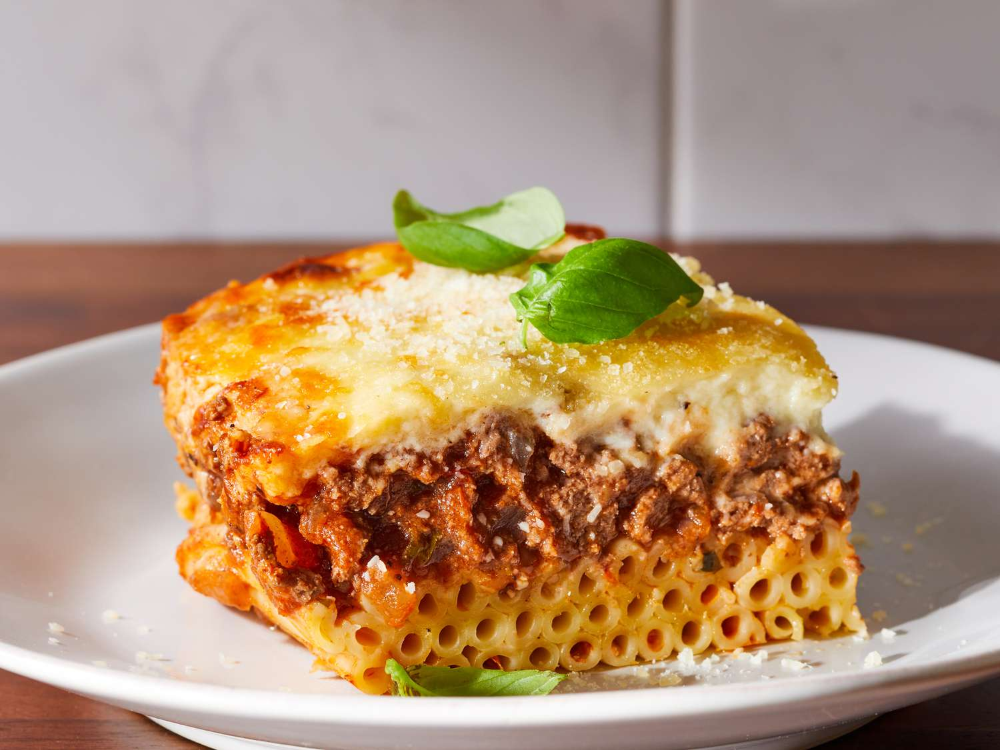

Home
Pastitsio

Description
Pastitsio is a Greek pasta dish assembled and baked, similar to Italian lasagna.
It usually consists of pasta, a meat sauce, and béchamel sauce.
Ingredients
Meat Sauce
- 2 tablespoons butter
- a large onion, chopped
- 3 cloves garlic, crushed
- 1.5lbs lean ground beef
- 15oz can crushed tomatoes
- 0.5 cup dry red wine
- 0.5 cup beef broth
- 2 tablespoons tomato paste
- 2 tablespoons chopped fresh parsley
- a cinnamon stick
- 1 whole clove
- salt and pepper to taste
Pasta
- 12oz bucatini or pastitsio pasta
- 4 tablespoons butter
- 0.25 cup grated Kefalotiri, Parmesan, or Pecorino cheese
- 1 dash ground nutmeg
- 0.25 teaspoon salt
- 0.25 teaspoon freshly ground black pepper
- 2 large eggs, lightly beaten
Béchamel Sauce
- 0.5 cup butter
- 0.5 cup all-purpose flour
- 3 cups milk
- 0.25 teaspoon ground nutmeg
- 0.25 teaspoon salt
- 0.25 teaspoon ground black pepper
- 1.5 cups grated Kefalotiri, Parmesan, or Pecorino cheese, divided
- 1 large egg, lightly beaten
- 1 large egg yolk, lightly beaten
Steps
- Preheat the oven to 350F. Grease a 9x13-inch casserole dish.
- Melt butter in a skillet, add onion and garlic, and stir gently until onion is soft (3-5 minutes).
- Increase heat and add ground beef. Cook and stir until browned, around 5 minutes.
- Stir in tomatoes, wine, broth, tomato paste, parsley, cinnamon, salt, pepper, and clove. Cover and put it on low heat for 20 minutes.
- Bring a large pot of salted water to boil. Add pasta and cook until tender yet firm to bite, 8 to 10 minutes.
- Drain it, and then put melted butter, grated cheese, nutmeg, salt and pepper over pasta.
- Toss well and cool briefly. Add 2 eggs and toss again.
- Now, melt butter in a saucepan on medium heat. Add flour, cook and stir for 2 minutes.
- Pour in milk, and bring it to boil whilst stirring constantly. Season with nutmeg, salt, and pepper.
- Cool slightly before stirring in 1 cup of graated cheese, beaten egg, and egg yolk.
- Stir half a cup of béchamel into meat sauce.
- Arrange pasta on the bottom of a baking dish, lining up all noodles to be on the same level.
- Spoon meat sauce over pasta, and top it with remaining béchamel sauce. Sprinkle remaining grated cheese on top.
- Bake in preheated oven until it's golden brown on top. About 50 minutes.
- Let stand for 10 minutes before cutting into squares.
Enjoy!